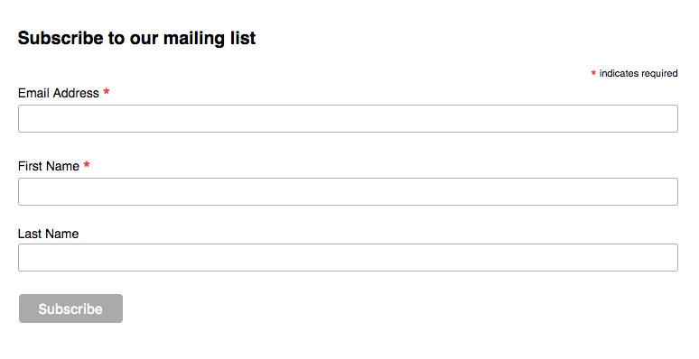
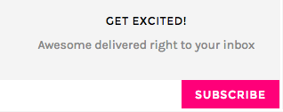
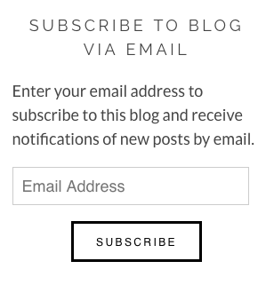
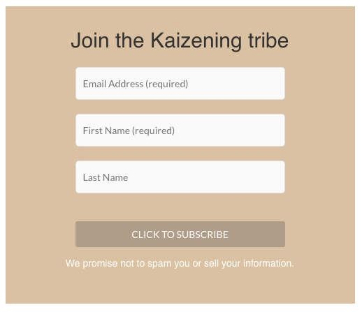
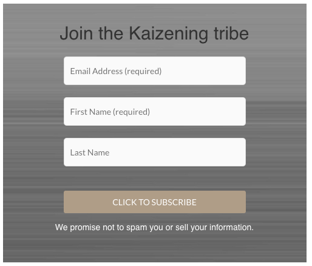
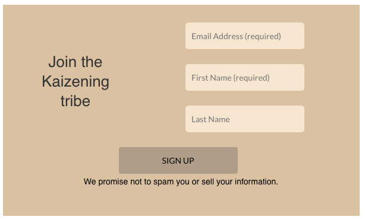

I helped work on the WordPress site for a startup lifestyle blog called Kaizening. Lindsey, the owner and founder, uses Mailchimp for the email list, and she had added the default Mailchimp sign up form to the pages and posts on the site. It was important to have a form that looked professional and fit better with her blog because she wanted to improve her subscriber count, so she asked me to take on the project.
Default Form
The default Mailchimp form is pretty basic, but it does have some simple CSS giving it styling.
It looks like this:
Competitive Analysis
I did some research on other lifestyle blogs to see what kinds of sign up forms they're using. Most sites seem to be using simple forms without a lot of "flashy" stuff.
 What Kaizening Needed
Kaizening needed a form that would be a better match for the site than the default. I knew from the competitive analysis that site visitors will expect it to be simple and clean, so I created three quick mockups of the form to show the owner.
The site has a relaxed feeling because it focuses on spirituality and self-improvement, so being bright and cheery wouldn't fit. And Kaizening's brand color is a tan/orange color, so I incorporated that into the forms as well. The goal of this form is to get people to sign up, so it needs to be noticeable enough that people will realize it's there without having to hunt for it.
  Finished Product
I gave them to the owner and did a poll of other women who read lifestyle-type blogs, and the first option was the unanimous winner.
After a few tweaks we had the final version, so I went onto WordPress and customized the CSS until the forms on the site looked just right. I also added aria labels to try to help out people using screenreaders since the fields aren't labeled.
The form uses the brand color (C69f70) and fonts (Lato and Playfair Display), so it feels like it belongs on the site. And it's still simple, straightforward, and eye-cathing without having to be flashy or bright.
Email sign ups have increased since the new form got added (after just two months in use the subscriber count has gone up by 30%!), so the form is serving its purpose and helping to bring in new subscribers. Success!

What I Learned
It doesn't take a lot of time or work to make a positive difference!